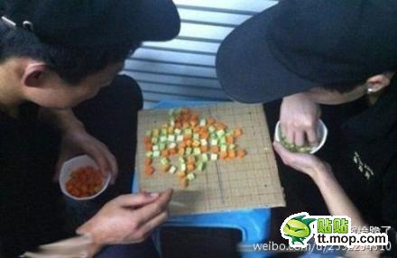

蔬菜版五子棋
首页
抱朴守静
#1 蔬菜版五子棋 作者：掌棋宣传员 发表时间：2012-12-8 11:06:49

#2 Re:蔬菜版五子棋 作者：与郎共五 发表时间：2012-12-8 12:09:18
没图。有个菜园也不错
#3 Re:蔬菜版五子棋 作者：掌棋宣传员 发表时间：2012-12-8 21:04:32

#4 Re:蔬菜版五子棋 作者：不明飞行物 发表时间：2012-12-8 23:07:04
哈哈，好环保
#5 Re:蔬菜版五子棋 作者：天涯独行客 发表时间：2013-6-28 21:07:20
还可边下边吃